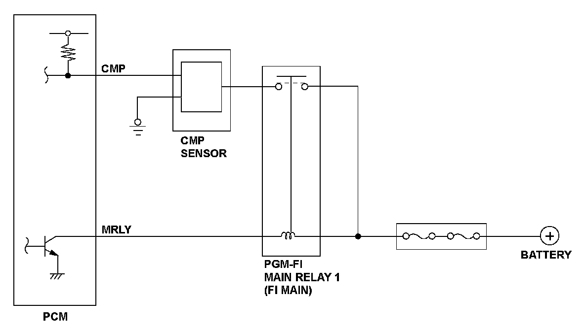
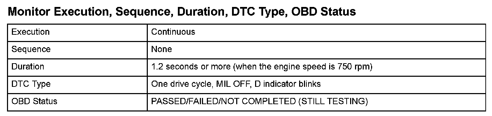
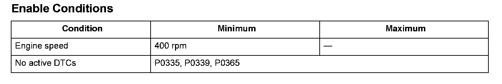

Camshaft Position (CMP) Sensor Intermittent Interruption
DTC P0369: Camshaft Position (CMP) Sensor Intermittent Interruption
General Description
The camshaft position (CMP) sensor consists of a rotor and a semiconductor that detects rotor position. When the rotor turns after starting the engine, the changes of magnetic flux in the semiconductor are converted into pulsing signals to the powertrain control module (PCM). The CMP sensor detects the top dead center of each cylinder for fuel injection timing. If CMP sensor pulsing signals are detected an abnormal number of times due to noise, a malfunction is detected and a DTC is stored.

Monitor Execution, Sequence, Duration, DTC Type, OBD Status

Enable Conditions
Malfunction Threshold
Abnormal CMP sensor pulsing signals are detected at least 30 times.
Diagnosis Details
Conditions for illuminating the indicator
When a malfunction is detected, the D indicator blinks, and the DTC and the freeze frame data are stored in the PCM memory. The MIL does not come on.
Conditions for clearing the DTC
The DTC and the freeze frame data can be cleared by using the scan tool Clear command or by disconnecting the battery.